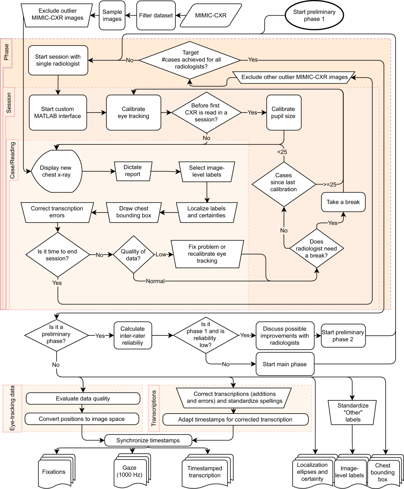
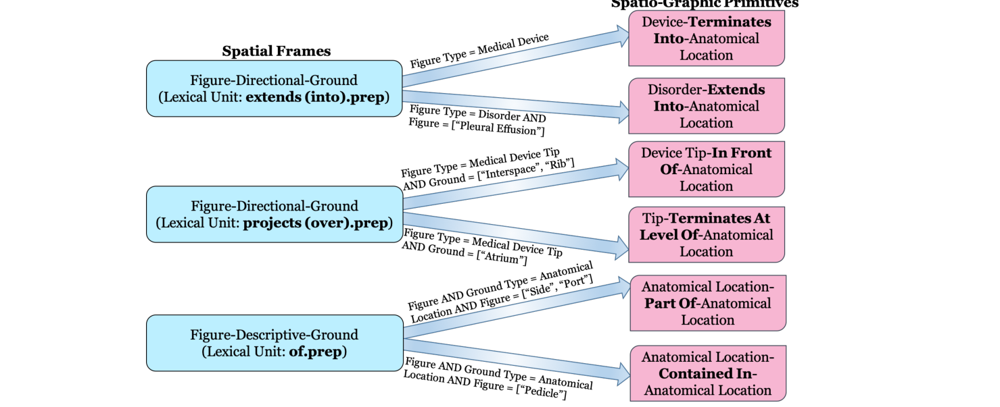

방향 표현을 넘어서: 공간 언어는 GazeMed를 어떻게 발전시킬 수 있는가?
추론 시점의 시선과 발화를 활용한다는 발상은 충분히 설득력 있는 연구 방향입니다. 공간 언어는 이 방향을 더 강하게 만들 수 있습니다. 다만 단순한 키워드 목록이 아니라 구조화되고 해부학을 인식하는 제약으로 표현하고, 더 단순한 설명들과 비교해 검증해야 합니다.
01 · 입장
먼저 내릴 수 있는 답
핵심 아이디어는 발전시킬 가치가 있습니다. 가장 가까운 선행 연구들은 대체로 시선을 학습용 감독 신호로 구성하거나 이미지 모델의 학습을 개선하는 데 사용합니다. 반면 GazeMed는 새로운 환자 사례를 해석하는 방사선 전문의의 시선과 발화를 추론 입력 계약에 그대로 포함합니다. 이는 의미 있는 차이입니다.
공간 언어 경로도 유망하지만, 현재 결과는 완성된 언어 기여가 아니라 가능성을 확인한 탐색 실험으로 다루는 편이 타당합니다. 이진 위치 특성 7개는 영역 중첩을 일관되게 개선하지만, 이진 Pointing 지표에서의 효과는 더 작고 불안정합니다. 따라서 다음 단계에서는 전체 아키텍처를 무분별하게 키우기보다 표현 방식과 대조 실험을 정교하게 만들어야 합니다.
다섯 단계로 이해하는 GazeMed
아키텍처를 보기 전에 GazeMed를 다섯 번의 결정으로 나누어 보면 전체 구조가 선명해집니다. 각 결정은 연속적으로 일어나는 임상 판독 과정을 검증 가능한 위치 추정 문제로 바꿉니다.
흉부 X-ray를 판독하는 동안 시선이 안정적으로 머문 위치를 기록합니다.
구술 판독문에 시간 정보를 붙이고 하나의 finding을 언급하는 구절을 찾습니다.
시간, 위치, 언어를 이용해 해당 언급과 관련된 fixation을 추정합니다.
학습한 attention weight를 방사선 전문의의 실제 fixation 좌표에 다시 놓습니다.
만들어진 heatmap을 해당 finding에 대해 사람이 그린 ellipse와 비교합니다.

시선을 하나의 관측 위치로 볼 수 있을 만큼 짧은 시간 동안 안정된 구간입니다. 모든 원시 eye-tracker sample을 뜻하지는 않습니다.
하나의 finding label과 연결된 시간 정보가 있는 구절입니다. 예를 들어 pleural effusion을 서술하는 구절이 해당합니다.
판독 뒤 finding의 위치를 나타내기 위해 그린 거친 영역입니다. 평가용 정답이며 추론 입력이 아닙니다.
양성 label, 하나 이상의 ellipse, 전체 fixation 시퀀스, 매칭된 판독문 언급을 포함하는 하나의 판독–finding 쌍입니다.
02 · 현재 근거
PR #3이 실제로 입증한 것
현재 연구는 REFLACX Phase 3의 동일한 finding 단위 테스트 사례 1,093개에서 여섯 가지 조건을 비교합니다. 아래의 첫 세 단계가 핵심 흐름입니다. 사람이 정한 시간 창을 학습한 시간 정렬로 바꾸고, 그 정렬 과정에 위치와 언어를 추가합니다.
언급 전 고정 시간 창으로 시선을 선택합니다.
시선과 언급 사이의 시간으로 관련성을 학습합니다.
attention에 x/y와 판독문 표현자를 추가합니다.
위 수치는 고정된 환자 split에서 training seed 0으로 얻은 결과입니다. 모든 조건이 정확히 같은 테스트 사례를 사용하므로 paired comparison에는 적합하지만, 여러 seed의 평균은 아닙니다.
같은 heatmap을 서로 다르게 읽는 두 지표
Intersection over Union · IoU
area(prediction ∩ ellipse) / area(prediction ∪ ellipse)
Heatmap을 threshold로 이진 영역으로 만든 뒤 ellipse와 얼마나 겹치는지 측정합니다. Target을 잘 덮으면서 바깥으로 지나치게 퍼지지 않은 영역에 높은 점수를 줍니다. Threshold와 smoothing bandwidth는 validation data에서 정하고 test에서는 고정합니다.
Pointing game
1 if argmax(heatmap) lies inside ellipse; otherwise 0
가장 뜨거운 한 지점이 target 안에 있는지만 확인합니다. Threshold가 필요 없지만 결과가 이진값입니다. Heatmap의 나머지 부분이 좋아져도 peak가 ellipse 경계의 같은 쪽에 남아 있으면 변화가 보이지 않습니다.
따라서 IoU 0.3188은 사례의 31.88%를 맞혔다는 뜻이 아닙니다. 예측 영역과 정답 영역이 겹친 정도의 평균입니다. 반면 Pointing 0.7237은 비율로 읽을 수 있습니다. Seed 0의 테스트 사례 중 72.37%에서 peak가 target 안에 들어갔다는 뜻입니다.
여섯 조건이 답하는 여섯 질문
| 조건 | 사용 가능한 정보 | IoU | Pointing | 답하는 질문 |
|---|---|---|---|---|
| B1 · 고정 1.5초 | 시선 + 고정 시간 | 0.2082 | 0.5517 | 선행 연구의 heuristic은 어디까지 가능한가? |
| RadZero | 영상 + 구절 | 0.2988 | 0.7255 | Image–text grounding과 비교해 경쟁력이 있는가? |
| Temporal-only | 시선 + 학습한 시간 | 0.2880 | 0.6816 | 학습한 시간 정렬은 무엇을 더하는가? |
| 최종 모델 | 시간 + x/y + 표현자 | 0.3188 | 0.7237 | 위치와 언어가 함께 무엇을 더하는가? |
| 위치 셔플 | 잘못 연결한 fixation↔x/y | 0.2101 | 0.4337 | 사례별 실제 대응 관계가 중요한가? |
| 공간 단어 마스킹 | 위치 특성 7개를 제외한 정보 | 0.2943 | 0.7118 | 공간 언어 자체가 중요한가? |
RadZero는 입력 modality의 우열을 가리는 대상이 아니라 비교 기준입니다. RadZero는 영상 pixel과 구절을 보고, GazeMed는 영상 pixel 없이 시선과 발화를 봅니다. 고정 split에서 최종 모델은 IoU가 더 높고(p = 1.6×10−4), Pointing은 통계적으로 구분되지 않습니다(p = 0.92). 이때 RadZero의 Pointing point estimate가 조금 더 높습니다. 타당한 결론은 서로 다른 입력 계약에서 경쟁력 있는 위치 추정이지, image grounding보다 우월하다는 주장이 아닙니다.
초기 프로젝트 요약에서는 고정 REFLACX baseline을 0.233으로 제시했습니다. 최신 PR 기술 명세는 현재의 1,093개 사례 프로토콜에 조건을 맞춘 뒤 0.2082를 보고합니다. 실험 단계가 다른 수치를 섞지 말고, 하나의 고정된 명세를 기준으로 결과를 인용해야 합니다.
대조 실험은 최종 모델이 왜 좋아졌는지를 묻습니다
중요한 사실은 최종 모델의 점수가 높다는 데 그치지 않습니다. 다음 두 실험은 학습된 시스템의 대부분은 유지하면서 하나의 대응 관계만 손상합니다.
- 위치 셔플: 각 사례 안에서 fixation의 x/y를 무작위로 섞으면 IoU는 0.2101, Pointing은 0.4337로 낮아집니다. 좌표 집합은 그대로 있지만 각 위치가 잘못된 시간·언어 맥락과 연결됩니다. 큰 성능 하락은 실제 대응 관계가 필수임을 보여줍니다.
- 공간 단어 마스킹: 위치 표현자 7개를 제거하면 IoU는 0.2943, Pointing은 0.7118로 낮아집니다. Training seed 5개와 patient split 5개를 합친 10회 실험에서 IoU 효과는 10/10 모두 양의 방향이며 유의합니다. Pointing도 10/10 같은 방향이지만 5/10에서만 유의합니다.
따라서 위치 대응 관계에 대해서는 강한 주장을, 공간 언어에 대해서는 크기가 작고 지표에 따라 검출력이 다른 주장을 지지합니다. 마스킹은 영역 모양을 바꿔 IoU를 떨어뜨리면서도 가장 뜨거운 한 점을 ellipse 밖으로 옮기지는 않을 수 있습니다. 두 대조 실험이 같은 강도로 확립됐다고 해석하면 오히려 중요한 다음 질문을 놓치게 됩니다.
한 번의 실행을 대표 수치로 사용하지 않기
5개 seed에서 최종 모델의 평균입니다. 범위는 IoU 0.3177–0.3195, Pointing 0.7109–0.7237입니다.
5개 patient split에서 최종 모델의 평균입니다. 모든 split의 두 지표에서 Final > Temporal-only > B1 순서를 유지합니다.
자주 인용되는 Pointing 0.7237은 5개 training seed 가운데 최댓값이며 전형적인 결과가 아닙니다. 프로젝트 요약에는 평균과 범위를 사용하고, paired statistical comparison을 위해 seed 0 표를 함께 남겨두는 방식이 적절합니다.

03 · 주장의 경계
추론 시점의 시선은 이 연구의 차별점입니다. 다만 “실시간”은 인과적 검증이 더 필요합니다.
이 프로젝트의 명확한 차별점은 새로운 사례를 추론할 때 시선과 발화를 사용한다는 것입니다. 이는 핵심으로 유지할 만합니다. 다만 문헌에는 상호작용형 시스템과 더 넓은 범위의 시선 조건부 시스템도 존재하므로, 기존 연구가 “추론 시점에 시선을 사용하지 않는다”고 넓게 말하기보다는 가장 가까운 흉부 X-ray 위치 추정 조건에 한정해 비교하는 편이 정확합니다.
동기화된 판독 기록은 어떤 모습인가?
REFLACX는 여러 개의 시계를 동시에 기록합니다. Eye-tracker sample은 안정된 fixation으로 파싱되고, 구술 단어에는 timestamp가 붙습니다. Zoom, pan, window 상태도 기록됩니다. Finding ellipse는 검증을 위해 구술이 끝난 뒤 그립니다. GazeMed는 이 흐름을 하나의 finding mention 단위로 연결합니다.
전체 fixation 시퀀스, 단어 시간, 매칭된 finding text, finding identity입니다.
사람이 그린 finding ellipse입니다. Test prediction을 만들 때 모델이 이 target을 보면 안 됩니다.
흉부 X-ray pixel입니다. 따라서 RadZero는 경쟁력 비교 대상이지 입력 조건이 같은 baseline은 아닙니다.
그러나 현재 구현은 전체 fixation 시퀀스를 입력받고 각 fixation과 언급 사이의 부호 있는 시간 차이를 사용합니다. 따라서 발화 뒤에 발생한 fixation도 attention에 참여할 수 있습니다. 이 사실이 위치 추정 결과를 무효화하지는 않지만, 시스템이 수행한다고 주장할 수 있는 범위를 바꿉니다.
인과적 replay에서는 finding 구절이 끝나는 시점과 같은 출력 시계를 정의하고 fixation_end ≤ output_time을 강제해야 합니다. 다음 항목을 함께 보고해야 합니다.
- 출력 시점에서의 위치 추정 성능,
- 지도를 만들 만큼 충분한 과거 시선이 존재하는 언급의 비율,
- 구절이 끝난 뒤 예측이 나오기까지의 지연 시간,
- 인과적 prefix와 전체 시퀀스 결과 사이의 격차.
핵심 비교는 단순히 “미래 시선 포함”과 “미포함”으로 끝나지 않습니다. 구절이 진행되는 동안 정확한 영역이 처음으로 안정되는 시점도 보여줘야 합니다. 그래야 위치 추정 성능을 실제 동작 지연 시간과 연결할 수 있습니다.
이 실험을 통해 언급 뒤 시선이 정보 누수가 아니라 유용한 확인 행동이라는 사실이 드러날 수도 있습니다. 그렇다면 두 상황을 하나의 실시간 주장으로 묶기보다, 온라인 발견 모드와 오프라인 또는 지연된 확인 모드를 구분해야 합니다.
04 · 현재 표현
현재 공간 언어 경로가 하는 일
현재 구현은 제약 없는 판독문 전체를 embedding하지 않습니다. 키워드 규칙으로 finding 언급을 찾고, 매칭된 문장을 10개의 이진 표현자로 바꿉니다.
판독문 문장에서 attention score까지
Keyword regular expression으로 finding label을 timestamp가 있는 판독문 문장과 연결합니다. 단순한 부정 표현은 negation guard로 제외합니다.
10개 descriptor bit를 8차원 learned finding embedding과 이어 붙이고 하나의 query vector로 projection합니다.
각 fixation은 시간·운동 특성 6개, 원시 x/y, 동일한 finding embedding을 제공합니다.
한 층의 scaled dot-product attention이 전체 fixation 시퀀스 위의 확률 분포를 만듭니다.
시간·운동 특성 6개는 가장 가까운 언급까지의 부호 있는 시간, 절댓값 시간 차이, 언급 이전 여부, 기존 1.5초 window 포함 여부, fixation duration, instantaneous velocity입니다. 모델은 각 입력의 물리적 의미를 남겨두면서 고정 gate의 부드러운 대안을 학습할 수 있습니다.
공유된 예시에는 “top”과 “below”가 포함돼 있었습니다. 현재 코드는 관련 개념을 upper와 lower로 구현하며, 별도의 below 표현자는 없습니다. “lower”는 수직 영역이고 “below”는 두 개체 사이의 관계이므로 이 구분은 중요합니다.
Regex가 잘못된 문장을 연결하거나 paraphrase를 놓치면 시간 특성과 descriptor vector가 동시에 오염됩니다. 따라서 사람이 직접 수행하는 mention-link audit은 단순한 data cleaning이 아니라 언어 기여 주장의 타당성을 확인하는 절차입니다.
이 설계는 메커니즘을 탐색하는 데 매우 좋습니다. 내부를 확인하기 쉽고, 간단히 마스킹할 수 있으며, 대규모 사전학습 언어 모델의 효과와 혼동하기도 어렵습니다. 다만 방사선 영상의 공간을 나타내는 최종 표현으로는 한계가 있습니다.
05 · 기회
공간 언어가 시선만으로는 얻을 수 없는 정보를 제공하는 이유
1. 시선은 후보를 만들고, 언어는 그중 하나를 선택할 수 있습니다.
전체 판독 과정에는 현재 finding과 무관한 fixation이 많습니다. 방사선 전문의가 양쪽 폐기저부를 모두 살펴봤다면 “right”라는 단어가 일부 fixation만 선택하도록 도울 수 있습니다. 같은 영역에 여러 finding이 있다면 finding의 종류와 시간 정보가 모호성을 더 줄일 수 있습니다.
2. 언어는 좌표계를 표현할 수 있습니다.
원시 x/y는 한 점이 영상 어디에 있는지를 알려줍니다. 언어는 임상의가 그 위치를 어떻게 조직하는지 알려줍니다. 예를 들면 좌측과 우측, 폐첨부와 폐기저부, 폐문부와 말초부, 또는 심장 뒤입니다. 이러한 개념은 영상 크기나 크지 않은 viewing transformation이 달라져도 비교적 안정적으로 유지됩니다.
한쪽 또는 양쪽을 선택합니다.
흉부를 위–아래 축의 영역으로 나눕니다.
국소 좌표계를 정의하는 해부학 구조를 지정합니다.
Finding을 anchor에 대한 상대 위치로 표현합니다.
영역을 얼마나 넓게 차지해야 하는지 제한합니다.
위치 주장을 확정할지, 약하게 만들지, 보류할지를 정합니다.
3. 고립된 방향보다 관계가 더 많은 정보를 담습니다.
방사선 판독문은 해부학 구조를 기준으로 finding의 위치를 자주 서술합니다. Rad-SpatialNet은 trigger와 관련 요소를 포함한 frame으로 공간 언어를 모델링합니다. 이는 한 문장을 흉부 위의 공간 제약으로 옮기는 자연스러운 연결 고리가 됩니다.

이 도식은 평면적 keyword vector의 한계를 구체적으로 보여줍니다. “Extends into”는 device의 끝 위치를 나타낼 수도 있고 disorder가 퍼지는 방식을 나타낼 수도 있습니다. “Projects over” 역시 함께 등장하는 entity에 따라 깊이 또는 termination level을 뜻할 수 있습니다. 모델은 trigger word의 등장 여부만이 아니라 무엇이 무엇에 대해 위치하는지 표현해야 합니다.
4. 언어는 시선을 무시해야 할 때도 알려줄 수 있습니다.
부정, 불확실성, 비교, 추적 관찰 문장은 새로 확인된 양성 finding과 같은 위치 의미를 갖지 않습니다. 구조화된 언어 경로는 단순히 heatmap을 옮기는 대신 예측을 보류하도록 학습하거나 규칙으로 강제할 수 있습니다.
finding label만으로도 전형적인 해부학적 분포를 예측할 수 있습니다. 공간 단어는 이 사전분포를 조금 더 좁히는 역할만 할 수도 있습니다. 언어–시선 attention을 환자별 근거로 해석하기 전에, GazeMed는 환자별 시선이 label 조건부 해부학 지도보다 추가적인 가치를 제공함을 보여야 합니다.
06 · 제안하는 확장
키워드 벡터에서 해부학 기반 공간 프레임으로
유용한 중간 표현은 이진 키워드보다 풍부하면서도, 내부를 알 수 없는 문장 embedding보다 검증하기 쉬워야 합니다.
실제로 구현할 수 있는 표현 파이프라인
문장 전체를 하나의 시점으로 줄이지 않고 단어 단위 timestamp를 유지합니다.
Finding, anatomical anchor, relation, extent, polarity, certainty를 추출합니다. 해결되지 않은 slot은 추측하지 않고 그대로 표시합니다.
해부학 atlas 또는 별도로 검증한 anatomy model을 사용해 “behind the heart”를 retrocardiac 영역으로 연결합니다. Test ellipse는 사용하지 않습니다.
출력 시점까지 관측된 fixation만 평가하고 실제 좌표가 언어 사전분포를 좁히거나 반박하도록 합니다.
부정, 불확실, mention matching 실패, 시선 근거 부족 상태에서는 “근거 부족”을 반환할 수 있어야 합니다.
모델은 anchor와 relation을 해석 가능한 공간 사전분포로 바꾸고, 시간적으로 관련된 시선이 이를 더 정교하게 만드는지 확인할 수 있습니다. 그러면 기여를 다음과 같이 명확히 분해할 수 있습니다.
각 화살표는 측정 가능한 성능 증가가 됩니다. 언어만으로 이미 해당 사례의 위치를 찾을 수 있다면 그 성과를 시선의 기여로 계산해서는 안 됩니다. 관계가 주어진 뒤에만 시선이 도움이 된다면, 두 정보의 상호작용 자체가 연구 기여가 됩니다.
추론에서 사용하는 anatomy mask는 고정 atlas, 별도로 학습한 anatomy model, 또는 선언된 입력 계약에서 허용하는 image annotation으로 만들어야 합니다. Test finding ellipse에서 만들면 baseline에 정답이 유출됩니다.
왜 범용 문장 encoder부터 시작하지 않는가?
사전학습 encoder는 점수를 높이면서도 해부학, 중증도, finding 종류, 판독문 스타일 가운데 무엇을 학습했는지 감출 수 있습니다. 구조화된 frame을 사용하면 적용 범위 통계, 명시적인 실패 유형, 통제 가능한 ablation을 얻을 수 있으며, 향후 representation learning을 위한 명확한 목표도 세울 수 있습니다.
07 · 평가 계획
이 방향을 설득력 있게 만드는 여섯 가지 실험
표현자와 관계 audit
각 표현자가 얼마나 자주 활성화되는지, 사람이 확인한 precision, 동시 출현, 좌우 오류, finding 분포를 보고합니다.
답하는 질문: 측정된 언어 효과는 넓게 나타나는가, 아니면 몇 가지 흔한 구절이 주도하는가?Finding 조건부 해부학 사전분포
학습 데이터의 ellipse만으로 지도를 만듭니다. 동일한 사례에서 label-only, label+direction, label+anatomical frame, Temporal, Final을 비교합니다.
답하는 질문: 환자별 시선은 전형적인 위치 정보보다 더 나은가?표현자 그룹별 leave-one-group-out
좌우, 수직 영역, 해부학적 anchor, relation, 범위, 불확실성 그룹을 하나씩 제거합니다.
답하는 질문: 실제로 위치 추정을 바꾸는 언어 계열은 무엇인가?사례 간 언어 교환
finding label과 모델 용량은 그대로 둔 채, 호환되는 finding 사례 사이에서 spatial frame을 맞바꿉니다.
답하는 질문: 모델은 해당 사례의 언어를 사용하는가, 아니면 일반적인 finding 단서를 사용하는가?구절의 점진적 replay
단어가 들어오는 대로 query를 갱신하고 과거 fixation만 공개합니다. 안정적이고 정확한 영역이 처음 나타나는 시점을 측정합니다.
답하는 질문: 실제 판독 과정에서 언어는 언제부터 유용해지는가?조합적 holdout
구성 요소 자체는 학습 데이터에 남겨두되, 일부 finding–relation 또는 anchor–relation 조합만 제외합니다.
답하는 질문: 표현이 새로운 조합을 구성할 수 있는가, 아니면 구절 template을 암기하는가?이 실험들은 하나의 split에서 여러 대형 encoder를 비교하는 것보다 더 많은 정보를 줍니다. 언어가 재사용 가능한 공간 추상을 제공하는지, 시선이 환자별 잔여 정보를 제공하는지를 구분해 보여주기 때문입니다.
기능 목록이 아니라 근거의 관문으로 실행하기
Mention-link와 descriptor audit을 먼저 마칩니다. Coverage나 precision이 낮으면 새로운 encoder를 비교하기 전에 측정 방식을 개선합니다.
Label+frame과 label+frame+gaze가 비슷하다면 기여는 환자별 gaze grounding이 아니라 언어에서 얻은 위치 정보입니다.
성능이 언급 뒤 fixation에 크게 의존하면 시스템을 delayed verification으로 설명하고 live-output 주장을 멈춥니다.
학습에서 제외한 relation 조합에 실패하면 범용 문장 encoder를 더하기 전에 검증 가능한 rule/frame 체계를 유지하고 필요한 annotation을 수집합니다.
하나의 결과가 확장을 중단시킬 수도 있어야 합니다. 이 관문들의 실용적 가치는 다음 노력을 data validation, causal evaluation, spatial semantics, multimodal fusion 가운데 어디에 투입해야 하는지 결정한다는 데 있습니다.
08 · 권고
프로젝트를 위한 일관된 방향
5개 training seed와 5개 patient split의 두 지표에서 Final > Temporal-only > B1 순서를 유지합니다. Position shuffle은 결정적으로 실패합니다.
마스킹 효과는 IoU에서 일관되고 유의하지만, 이진 Pointing 지표는 전체 실행의 절반 정도에서만 이를 검출합니다.
전체 시퀀스 평가는 인과적 online availability를 입증하지 않으며 label/frame 조건부 anatomy prior도 아직 분리하지 않았습니다.
작은 finding 조건부 cross-attention, 실제 fixation splatting, 정보 제거 대조 실험을 유지합니다.
인과적 prefix replay를 마치기 전까지 현재 시스템은 추론 시점 시선 + 발화를 이용한 위치 추정으로 설명합니다.
Label 조건부 해부학 사전분포, 수동 mention-link audit, 인과적 prefix replay를 추가합니다. Training-seed와 patient-split 민감도는 이미 측정했습니다.
이진 공간 표현자를 해부학 기반 frame으로 바꾸고 단계적으로 효과를 평가합니다.
사례별 오차가 의미 있는 상보성을 보여준 뒤 image–behavior fusion을 탐색합니다.
따라서 가장 방어하기 쉬운 기여는 “대규모 의료 비전 시스템에 시선을 추가한 모델”이 아닙니다. 더 단순한 설명을 배제하는 명시적 검증과 함께, 방사선 전문의의 시선, 시간, 공간 언어가 발화된 finding을 어떻게 함께 grounding하는지 보여주는 통제된 연구입니다.
RadZero는 하나의 유용한 경계를 더합니다. GazeMed는 고정 split에서 IoU가 더 높고 Pointing은 통계적으로 구분되지 않지만 서로 다른 입력 modality를 사용합니다. 이는 향후 image–behavior fusion의 가능성을 보여줄 뿐, gaze가 image evidence보다 낫다는 뜻은 아닙니다. 사례별 오류가 단순히 평균적으로 다른 것이 아니라 실제로 상보적일 때만 fusion이 타당해집니다.
출처
- GazeMed PR #3 — 현재 아키텍처, 기술 명세, 대조 실험, multi-seed 및 patient-split 결과, RadZero 비교, 재현 코드. Head commit
1e551d3기준으로 검토했습니다. - Lanfredi et al. (2022), REFLACX — 데이터셋 설계와 동기화된 시선–구술 수집.
- REFLACX Supplementary Video 2 — 수집 interface와 동기화된 gaze display를 보여주는 공식 영상.
- Lanfredi et al. (2023) — 언급 전 고정 시간 창을 사용한 label별 시선 추적 감독 학습.
- Datta et al. (2020), Rad-SpatialNet — 방사선 판독문의 frame 기반 공간 관계.
- GradTrack (MICCAI 2025) — 약지도 segmentation을 위한 시선 위치, 지속 시간, 시간 순서.
- RadZero (2025) — PR #3에서 외부 baseline으로 사용한 image–phrase grounding.